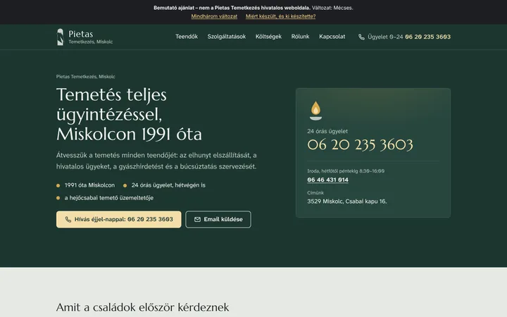
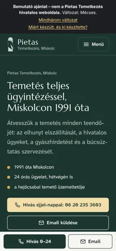
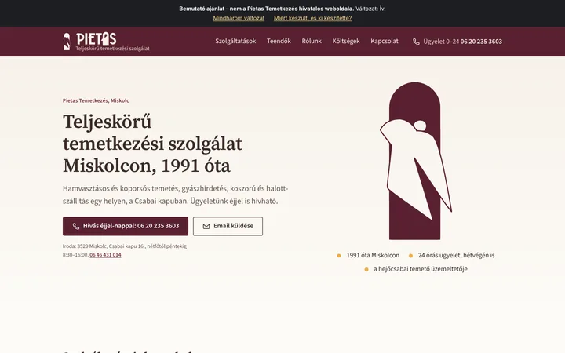
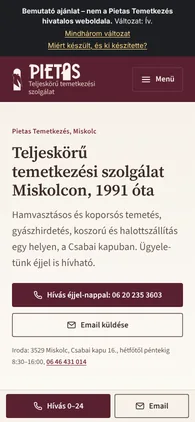
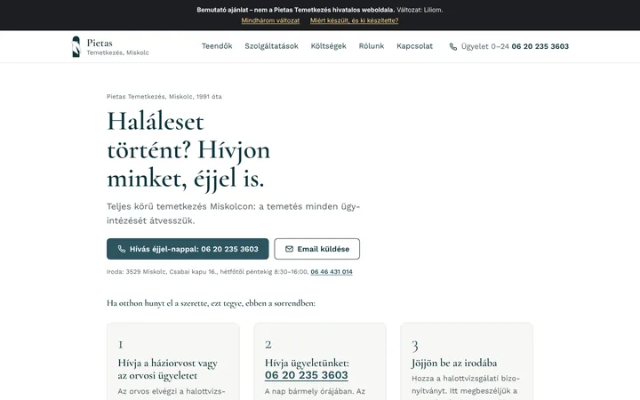
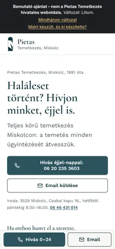

Miért készült ez az oldal, és ki készítette?
Szikora Marcell vagyok, weboldalakat készítek (webness.hu). Tiszanagyfaluban lakom, itt a környéken.
A mostani weboldalukon a fontos tudnivalók több aloldalon vannak, és a telefonszámok mobilon nem hívhatók egy érintéssel. A nyilvános anyagaikból elkészítettem három változatot, hogy ne kelljen elképzelni, milyen lehetne: ki lehet próbálni, telefonon is.
Szikora Marcell
webness.hu
Mit találtunk?
Három dolog, ami azokat érinti, akik most keresnek temetkezési szolgáltatót Miskolcon. Ellenőrizve: 2026. november 13.
-
Telefonról nem lehet egy érintéssel hívni
- Most
- Egyik telefonszám sem kattintható. A 24 órás ügyelet száma a kezdőlap szövegének alján és egy aloldal közepén áll. Az oldal mobilon a nagyítást is letiltja.
- Az új oldalon
- Az első képernyőn ott a „Hívás éjjel-nappal” gomb, és telefonon görgetés közben is mindig látszik. Minden szám egy érintéssel hívható.
-
Elavult és üres részek
- Most
- A kezdőlapon még a járvány idejéből maradt kérés áll. A temető üzemeltetéséről „közel 2 éve” olvasható, pedig 2008 óta tart. A „Szórásos” oldal üres, a Kapcsolat oldalon a térkép helye üres.
- Az új oldalon
- Friss, ellenőrzött tények: 1991 óta, 2008 óta a hejőcsabai temető, nyitvatartás és útvonal a Csabai kapuhoz.
-
Aki most veszítette el valakijét, nem kap egy helyen választ
- Most
- A teendők, az iratok, a költségek és a nyitvatartás öt külön aloldalon vannak. A díjmentes elszállítás és koszorú-kiszállítás, és az urnakiadás alig látszik.
- Az új oldalon
- Egy oldalon, sorrendben: kit hívjon, mit hozzon, miből áll a költség, mikor van nyitva az iroda. Az előnyök jól látható helyen.
Ingyenes tipp, az oldaltól függetlenül
Az „Észak gyászhirdetés” aloldal utolsó bekezdésébe valaki egy oda nem illő mondatot és reklámlinket tett, egy „virtuális barátnő” szolgáltatásra. Ezt olvassák a gyászhirdetést feladni készülő családok. Feltört WordPressre vagy illetéktelen hozzáférésre utalhat: érdemes a mondatot törölni, az admin-jelszavakat lecserélni, és a WordPresst a bővítményekkel együtt frissíteni. Szívesen megmutatom, hol van.
Amit még beletettem
- „Amit a családok először kérdeznek”: rövid válaszok a leggyakoribb kérdésekre, a mostani oldal tájékoztatóiból.
- A gyászhirdetés árai táblázatban, a javasolt mérettel; a temetés költségeinek tételei egy helyen.
- Hely a családok véleményének, a tájékoztató áraknak és néhány saját fotónak: ezeket a hívásban pontosítjuk.
- A logót vektorosan újrarajzoltam, hogy minden méretben éles legyen. Az eredeti fájl jobb lenne.
Az új oldal mindhárom változata a Google Lighthouse mérésén mobilon: Lighthouse, mobil (100-as skálán): 99 (teljesítmény), 100 (akadálymentesség).
Három változat
A tartalom ugyanaz, az arculat és a hangsúly más. Mindegyik változatban részenként jelezheti, mi tetszik és min változtatna; a lap alján összegyűjtjük, és ott kérheti a visszahívást is.
-


1. változat
Mécses
Mélyzöld, nyugodt színek, a nyitóképen mécsesfénnyel a 24 órás ügyelet száma. Nagy, jól olvasható betűk, a telefonszámok mindig kiemelve.
Megnézem a Mécses változatot -


2. változat
Ív
A mostani arculat felújítva: a logó sírkő-íve, a bordó és a borostyán szín, papírszerű háttér. A szolgáltatások kerülnek előre.
Megnézem a Ív változatot -


3. változat
Liliom
Világos, levegős, nagy betűs változat. Már a nyitóképen ott van lépésről lépésre, mi a teendő haláleset után.
Megnézem a Liliom változatot
Gyakori kérdések
- Mit kell nekünk csinálni?
- Szinte semmit: a tartalom a mostani weboldalukról van. Egy rövid hívásban átnézzük, mi tetszik, és kérek néhány dolgot: az eredeti logót, pár fotót az irodáról, és hogy mely adatok változtak.
- Mi lesz a mostani oldallal és a címmel?
- A pietas-temetkezes.hu cím marad, csak az új oldal kerül mögé. A régi aloldalak címeit átirányítjuk, így a Google-találatok sem vesznek el.
- Kell-e ehhez WordPress-t frissítgetni?
- Nem. Az új oldalon nincs bővítmény és admin-felület, így nincs mit frissítgetni, és a feltörés esélye is jóval kisebb.
- Mibe kerül?
- Ezt a hívásban, a kívánságaik alapján beszéljük meg, és írásban is elküldöm. Ha nem kérik, a bemutatót töröljük.

Ki készítette?
Szikora Marcell vagyok, szoftvermérnök, a Webness alapítója. Gyerekkorom óta programozom: több mint 15 év alatt 116+ weboldalt, webshopot és üzleti rendszert adtam át. Az Accenture-nél vezető fejlesztő voltam, ma a WorkFlex nemzetközi startupnál vagyok tech lead.
Kis családi vállalkozásoknak és nagy cégeknek is dolgozom, például a Salzgitter Mannesmann, a D-Link, a Miskolci Nemzeti Színház, a Jánosik és Társai és az Orha Művek számára. Velem közvetlenül dolgoznak: azzal beszélnek, aki a megoldást megtervezi és megírja.
Akikkel már dolgoztam
16 ügyfél, az ő szavaikkal, változtatás nélkül, ahogy a webness.hu-n is olvashatók.
Kérdése van? Hívjon most, közvetlenül engem
Azzal beszél, aki az oldalt megtervezte és megírta.
+36 70 702 1530 vagy írjon: info@webness.hu